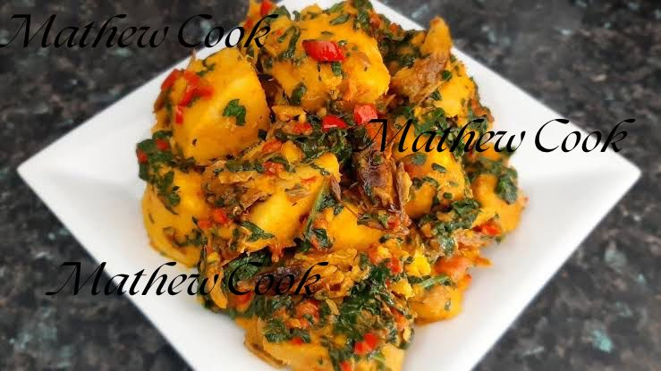

How to cook yam porridge

Description
Yam porridge is a very delicious yam recipe. Although it is eaten by the majority of tribes in Nigeria, more common in the Yoruba-speaking parts of Nigeria. It is nicknamed “Asaro elepo rede rede” by the Yoruba, which means “yam porridge boldly coloured with fresh palm oil and garnished to perfection”.
It’s also easy to make. It makes a perfect dinner or lunch and it is also a party favourite.
Ingredients
- 20 pieces of diced yam
- Palm oil (use according to preference and you can substitute with vegetable oil)
- 1 large-size dry fish (optional)
- 1 cup of dried prawns (optional)
- 1 large onion (preferably diced)
- 2 tablespoons of fresh ground yellow pepper
- 1 large-sized garlic chopped
- Fresh green vegetables (eg parsley, scent leaf or green amaranth)
- Salt
- Seasoning
Steps
- While your cooking gas is on medium heat, add the pieces of yam, the blended pepper combination, and enough water to cover (approximately one cm above the yam or keep it at the same level), alongside seasoning and salt, and then boil until the yam is almost soft. If necessary, lower the heat to prevent the yam from burning. Add stock or water to the yam in between cooking, if need be.
- When the yam is almost done, add the palm oil that has previously been heated and the chopped onions, and continue to cook until the yam is done to your taste, add seasoning and check for salt.
- Break yams into bits with a wooden ladle (spoon), but do not mash or ground them; you can leave some yam lumps if you choose.
- Cook for a further two to three minutes after adding flaked fish and gently stirring to prevent breaking the fish.
- Lastly, stir in chopped spinach (or any other green vegetable) and cook the porridge for an additional three minutes.